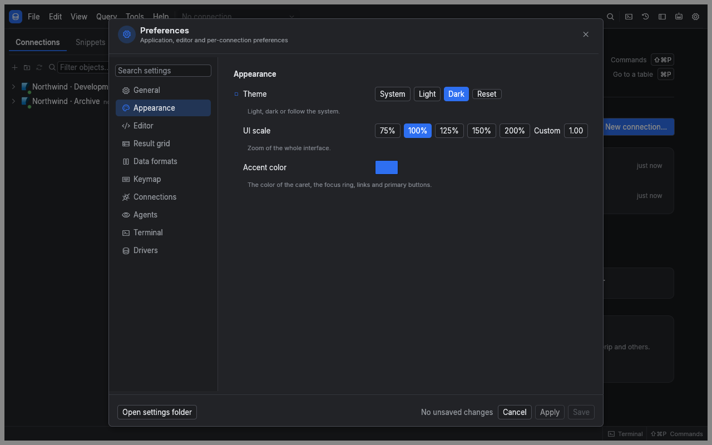
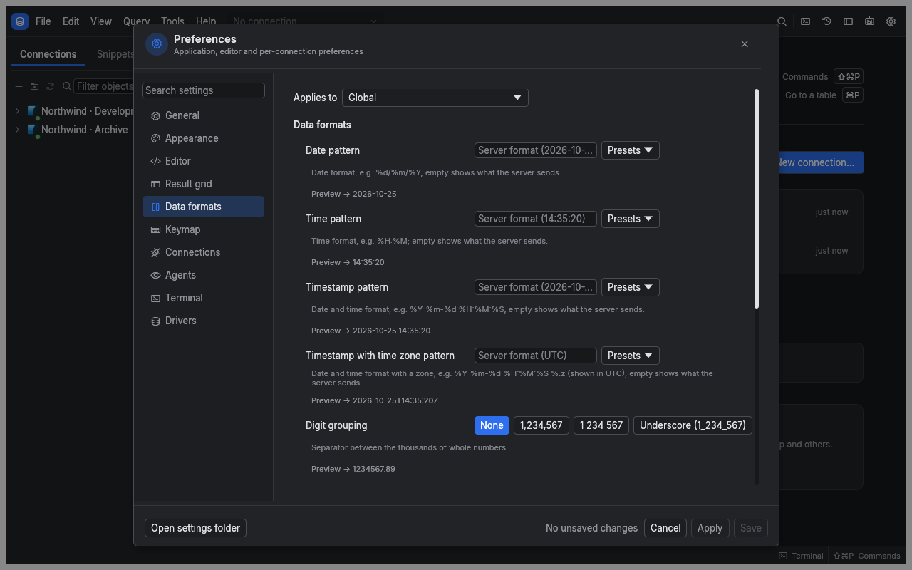
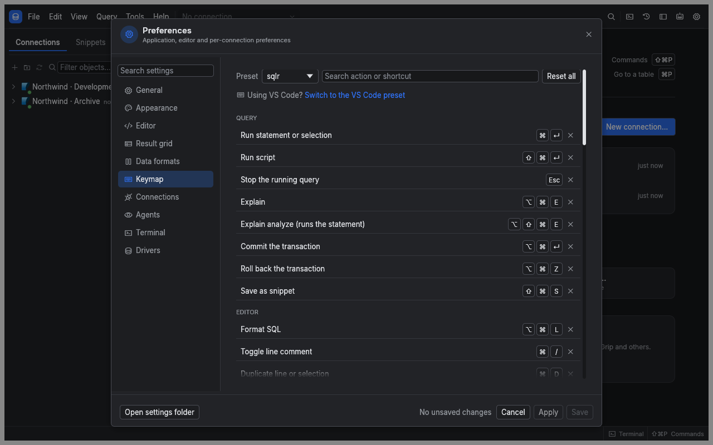

Manual › Reference
Set up your workspace and shortcuts
Use Preferences to make queries easier to read, control result sizes and choose defaults for each connection. The settings search finds both labels and related words, such as zoom for UI scale.
Change a setting
- Open Settings…, or press ⌘, on macOS (Ctrl+, elsewhere). The window is titled Preferences.
- Select a section or type in Search settings.
- For settings that support it, choose the global, profile or connection level.
- Change the value. Changes take effect in the running interface while you edit.
- Choose Apply to save and stay in Preferences, or Save to save and close.
Cancel restores the settings from when you opened the window or last chose Apply. Connection exposure changes in Agents apply and save immediately, separately from these preference edits.

Choose the right section
| Section | Use it for |
|---|---|
| General | Stop scripts at the first error, retain completed operations, include SQL in diagnostics, check for updates |
| Appearance | System, Light or Dark theme, interface scale and accent color |
| Editor | Font size, completion, line numbers, wrapping and SQL formatting |
| Result grid | Fetch size, row cap, memory budgets and the text displayed for NULL |
| Data formats | Date and number display, booleans, binary values and JSON |
| Keymap | Shortcut presets, custom bindings and conflicts |
| Connections | Separate editor sessions, connection timeout and safety flags |
| Agents | MCP server, token and connection access |
| Terminal | Shell, working directory, font size and scrollback |
| Drivers | Database session properties, sidecar idle timeout and Driver Manager |
Set global and connection defaults
An ordinary setting uses the most specific value available: connection, then its profile, then global, then the built-in default. A value marked as inherited shows where it comes from. Reset clears an override so the inherited value applies again.
flowchart LR
Default[Built-in default] --> Global[Global setting]
Global --> Profile[Connection profile]
Profile --> Connection[Connection override]
Appearance, editor preferences, memory budgets, diagnostics privacy and terminal settings apply globally. Page sizes, data formats, connection behavior and driver session properties can also vary by profile or connection.
Read-only, Confirm writes and Confirm destructive statements are safety flags. An enabled flag at any applicable level stays enabled: a connection cannot turn off protection required globally or by its profile. See profiles and transactions.
Control result sizes
| Setting in Result grid | Default | Meaning |
|---|---|---|
| Rows per fetch | 500 | Rows requested in each page, from 1 to 1,000,000 |
| Maximum rows when loading all results | 100,000 | Limit for Fetch all; 0 removes the row cap |
| Memory per result | 128 MiB | Memory budget for one SQL result; 0 removes this limit |
| Memory for all results | 512 MiB | Combined memory budget for SQL results; 0 removes this limit |
| NULL text | NULL | Display text for a database NULL value |
The memory limits move older SQL result chunks to private temporary storage while loading continues. All loaded rows remain available. Closing results releases their storage after the last reader finishes. Removing the row cap leaves the memory budgets active; the operating system manages the cache of mapped file pages.
Format displayed values
In Data formats, set date and timestamp patterns, number grouping, decimal places, boolean style, binary encoding and JSON layout. Each setting includes a sample preview. Empty date patterns and decimal places of -1 retain the value's original representation.
These options change presentation. Turn on Use these formats for export when exported text should use the same representation; it is off by default.

Learn and change shortcuts
The tables show the default sqlr preset on macOS. On Windows and Linux use Ctrl for ⌘ and Alt for ⌥. Menus and Keyboard Shortcuts show the actual bindings for your platform and chosen preset.
| Query action | Shortcut |
|---|---|
| Run statement or selection | ⌘Enter |
| Run script | ⇧⌘Enter |
| Stop | Esc |
| Explain | ⌥⌘E |
| Explain analyze, which executes the statement | ⌥⇧⌘E |
| Commit | ⌥⌘Enter |
| Rollback | ⌥⌘Z |
| Navigation action | Shortcut |
|---|---|
| New editor tab | ⌘T |
| New editor tab on current connection | ⌘N |
| Close tab | ⌘W |
| Next / previous tab | Ctrl+Tab / Ctrl+Shift+Tab |
| Open object | ⌘P |
| Commands | ⇧⌘P |
| Operations | ⇧⌘O |
| Terminal | Ctrl+Backtick on all platforms |
| Rename explorer item | F2 |
| Editing action | Shortcut |
|---|---|
| Apply edits | ⌘S |
| Save snippet | ⇧⌘S |
| Format SQL | ⌥⌘L |
| Toggle line comment | ⌘/ |
| Duplicate line or selection | ⌘D |
| Find / replace | ⌘F / ⌥⌘F |
| Find next / previous | ⌘G / ⇧⌘G |
| Complete | Ctrl+Space |
| Undo / redo | ⌘Z / ⇧⌘Z |
| Indent / outdent | Tab / Shift+Tab |
| Delete selected result rows | ⌘Backspace |
To customize a shortcut:
- Open Keymap in Preferences.
- Choose the sqlr or VS Code preset.
- Search for the command and use its recording control.
- Press the replacement chord, or Escape to cancel recording.
- Resolve any conflict marked in red before saving.
Commands can also be unbound or reset individually; Reset all restores the preset. A binding may be reused when its command scopes do not overlap.

Update sqlr
Check for updates at startup is on by default. It checks GitHub at most once a day and fails silently when offline. To check on demand, choose Check for updates now in General, or Check for Updates… in Help.
When a release is offered, Install downloads and verifies its checksum. Skip this version suppresses that release in automatic checks; an explicit check can offer it again. On macOS sqlr replaces its application bundle and may request administrator access. On Linux it replaces a writable binary or AppImage. Windows and unwritable Linux installations open the release page. After an installation, use Restart now when offered.
Locate your files
Use Open settings folder in Preferences for the configuration directory. Diagnostics shows the data directory.
| Directory | Files and contents |
|---|---|
| Configuration | connections.toml, profiles.toml, settings.toml, overrides.toml, keymap.toml, updates.json |
| Configuration | secrets.vault, encrypted credentials and MCP token; its key is kept in the OS keychain |
| Data | sqlr.db, containing history, snippets and diagram layouts |
| Data | drivers/<id>/<version>/, installed sidecar drivers |
| Data | logs/ and diagnostics/, local logs and incident reports |
On macOS both directories default to ~/Library/Application Support/dev.sqlr.sqlr/. Linux uses ~/.config/sqlr/ for configuration and ~/.local/share/sqlr/ for data. The startup options --config-dir and --data-dir select different locations. Moving a vault file alone does not transfer its key or credentials.
Start with alternate directories
The command line selects storage locations before the window opens. It does not run queries. Running sqlr --help prints:
Usage: sqlr [OPTIONS]
Options:
--data-dir <path> Keep history, snippets, logs and known hosts in <path>
--config-dir <path> Read connections, profiles and settings from <path>
-V, --version Print the version
-h, --help Print this helpBoth --config-dir path and --config-dir=path forms work. Unknown options, missing paths and stray arguments print usage to standard error and exit with code 2.
Related
- Profiles and transactions: set protections for database work.
- Agents and terminal: choose which connections an assistant can use.
- Troubleshooting: control SQL privacy and inspect local reports.
← Drivers · Agents and terminal →